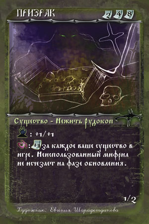

Категория: Темные маги
-
Вукодлак

Вукодлак – люди-оборотни, наиболее часто используемые при атаках на поселения или в случае отражения нападений на обиталища нежити. Оборотнями становятся при заражении определенным штаммом микроорганизмов, […]
-
Вритра

Вритра – огромный змей, который может раздавливать в своих объятиях целые отряды противников. Информация о том, где его содержат, является военной тайной, так как может […]
-
Вий

Вий – один из первородных мертвецов. Тренируя свои сверхспособности, этот представитель нежити настолько далеко продвинулся в своих поисках новых свойств астральных взаимосвязей, что сам Владыка […]
-
Дед

Дед – дух предков, очень недовольный тем, что про него забыли нерадивые потомки. Дед решает еще раз тряхнуть костями, но уже на стороне нежити. Все […]
-
Бабай

Бабай – легендарный представитель нежити, начинавший как похититель непослушных младенцев. Благодаря грамотным пиарщикам, заслуги Бабая были гипертрофированы, а сам персонаж стал известен столь широко, что […]
-
Шуликун

Шуликуны – самые низшие бесы, за которыми уже нет уже никого, кто мог бы хоть как-то насолить противнику. Бывают столь миролюбивы, что иногда сами рассказывают […]
-
Чертов конь

Чертов конь – огромный столетний сом, жизнь которого поддерживается только благодаря магическому вмешательству. За это он позволяет болотянникам использовать себя в качестве наездника и молниеносно […]
-
Коловертыш

Коловертыш – собакоподобное существо с огромным зобом, прислуживающее ведьме. В зобе у коловертыша припрятано так много полезных колдовских ингредиентов, что ведьма может приготовить практически любой […]
-
Анчутка

Анчутка – один из низших бесов, составляющий основную часть атакующих с воздуха армий нежити. Стрелки противника долго не могли найти у него уязвимую точку – […]
-
Болотянник

Болотянник – нежить, обитающая в болотах. Хотя ареал этого злобного духа ограничивается топями и трясиной, они станут незаменимыми помощниками, если хотя бы краешек поля сражения […]
-
Ведьма

Ведьма – потомственная колдунья. Ей могут стать только первые или последние девочки у матери-ведьмарки. С детства девочки начинают передавать из уст в уста (никаких записей!) […]
-
Призрак

Призрак – неизменный сосед сокровищ и подземных залежей мифрила. Часто люди утверждают, что появляющиеся в лесу огоньки указывают на место, где зарыт клад. Отправляясь затем […]
-
Искушенный в знании

Искушенный в знании – наместник, назначаемый Искушенным магом для контроля над всеми магами, находящимися в подчинении Владыки. Зависнув в точке, равномерно удаленной от нашего и Иного […]
-
Искушенный в бою

Искушенный в бою – наместник, назначенный Искушенным магом для лучшего и быстрейшего обеспечения порабощения всех неверных народов. Искушенный в бою так рьяно взялся за дело, […]
-
Искушенный в мифриле

Искушенный в мифриле – Наместник Искушенного мага, ниспосланный для надзора за рудокопами. Раньше Искушенный в мифриле был талантливым алхимиком, научившимся синтезировать мифрил в ретортах, но […]
-
Искушенный маг

Искушенный маг – Владыка Темных магов. О его происхождении неизвестно ничего, из каких глубин ада и сколько тысячелетий назад он пришел в наш мир, можно […]